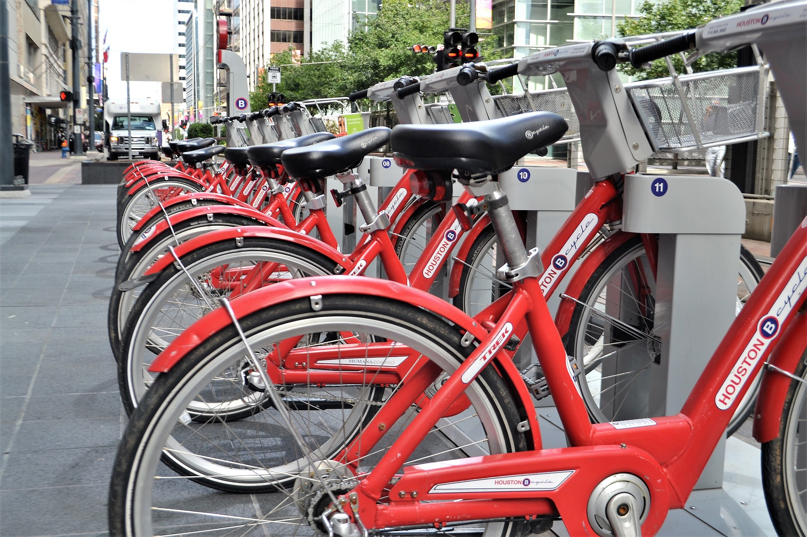

Whether it be with a significant other, your family or a group of friends, Houston has something to do for everyone. If you are looking for some cute date ideas, catching a movie is your go to. With perfectly warm weather, Houston makes it the optimum place to watch a movie outdoors year-round. The two top choices by Houstonians is Rooftop Movie Theatre and Showboat movie drive in theatre, whose prices start at 8 dollars.
Family/Friends Activities
With limited bike trails and bike lanes, renting a bicycle can be quite fun in Bayou City when done with friends or family. Aside from getting in your extra Vitamin D, renting a B-cycle allows you to familiarize yourself with the city, it might even lead you to discover a cute little restaurant or boutique. There are over 80 stations to rent a bike for, for as low as $3 per 30 minutes. If your are anti-outdoors, Houston still has something for you inside lovers. The Houston Toyota Center is the perfect go to spot to catch the Rockets playing or your favorite artist performing. Since opening in October 2003, the Toyota Center has quickly become one of the premier live entertainment venues nation-wide.